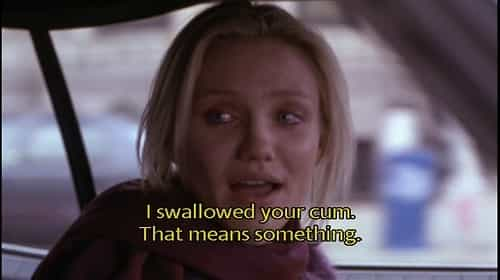

Michael is the author of Staying Married in a Degenerate Age. Follow him on Twitter or Facebook. You can read more of his writing at Honor and Daring.


Dating was a lot different before the sexual revolution. Men were highly motivated to get married because it was the only way they could get sex for free. Yes, fornication and adultery have always been around, but there were a lot of social factors in place that prevented it from being as common as it is today.
Because most men wanted to get married, a girl only had to use her youth, beauty, charm, and her family’s social status to attract a husband. She didn’t have to resort to additional techniques to force a man into a commitment.
But things have changed.
In the modern world, sex is a readily available commodity—virtually every unmarried woman “puts out.” This is a great situation if you happen to be a PUA feeding off the bloated, festering carcass that once was western civilization. It is not so great if you happen to be a traditionally minded man.
Today, women need to resort to all sorts of additional stratagems to lock a man down. They start using these lockdown techniques early in a relationship. You need to be able to spot them quickly so that you don’t get suckered into a long-term relationship with a girl that you don’t want to commit to.

Men seek out sex because it feels good, but women are more likely to use sex to get what they want. Even though poon is easy to come by, women who want an LTR know, or at least hope, that it builds some sort of emotional bond with a man.
They also know that a man will want to keep on returning to poon palace so they will keep the gates to the palace open as long as it takes to get a ring.
How do you know whether she is using sex to snag you? Most likely, she is. The key question to ask yourself is whether you mind being trapped by this particular girl. If you don’t mind, then proceed forward. She might be the right girl for you.
Of course, the way to avoid this stratagem is to find a virgin and keep her that way until your wedding night.
Leaving things at a man’s house is another stratagem that women use to escalate a relationship. It might be a toothbrush or something more intimate like a bra or panties. It starts out small, but before long she might have significant bits of her wardrobe in your house.
Leaving personal articles does two things. First, it marks your place as her territory. Her stuff serves as a talisman to ward off competing females. If you bring home a rival female, the rival will be turned off if she finds the other girl’s personal things.
Second, leaving a personal item behind means that she always has at least one more chance to see you. Even if you decide to end the relationship, you’ll still have to meet her one last time to return her favorite pillow. And this means that she will have one more chance to try to keep her claws in you.
Almost all girls use this tactic—even good ones—so if you see it, don’t regard it as a deal breaker if you want to continue the relationship. Nonetheless, you still should be aware of what is going on.
You and mommy are breaking up?
A pet is a baby proxy. It forces you into an emotional commitment. How can you deprive Fluffy of her mommy? You monster!
Never buy a pet with a girlfriend you don’t want around for a long, long time. It is just a manipulation technique.
Unmarried women frequently get pregnant either to extract child support payments from the baby daddy, or to force the man to marry her. In either case, this is not a girl you want to commit to, and is usually a losing proposition for everyone involved.
Gentleman, the lesson is simple: if you plan to go out in the rain, wear a raincoat!
A related stratagem is to somehow merge a portion of your finances. This could be opening a joint checking account or buying some large piece of property together like a car or a motorcycle.
I have a friend who bought a house with his girlfriend almost immediately after he started dating her. It was a tempting offer for him because the girl had the money for the down payment so he was able to move into a bigger house than he would have been able to afford on his own. Not surprisingly, he ended up marrying her.
The problem with entangling your finances with a woman is that it clouds your judgment and adds emotional commitment. When considering an LTR, your mind needs to be clear.
Never allow yourself to become financially entangled with a girlfriend. There already exists an institution that implies merging of financial interests. That institution is marriage.

Many a man has fallen to this stratagem. The mirage is that living together means unlimited sex with zero commitment. The truth is that it is that it is the ultimate lockdown technique.
If you agree to live with a woman, you are pretty much closing off any opportunities for meeting other women. And if you do choose to break up, it is going to be painful. The woman hopes that it will be so painful, that you will just succumb to staying with her.
I used to live next door to a couple that was living together. They were a good-looking couple, but it was pretty clear that the guy was not terribly happy with the arrangement. Regardless of his feelings, he finally gave in and married the girl. He went to his wedding like a man goes to the gallows.
Avoid moving in with a woman. If you really want to live with her, make it legal by marrying her.

It is one thing to go to a party or even a wedding as a couple. It is another when your relationship is recorded in writing on social media—forever. For some reason, writing something down makes it seem more permanent.
By announcing that you are “in a relationship” with someone on social media, women (or low testosterone males) are trying to imply a commitment. Granted, it is a very weak commitment, but you should still be aware of what she is trying to achieve.
This is not a common technique, but women do use it. I know a woman who became obsessed with the guy she was dating so she decided to follow him wherever he went. She got jobs at the companies where he worked so that she could be close to him. She even followed him when he moved to different cities to escape from her.
It took years, but she finally wore him down and he married her.
Run from any woman that is pulling the stalker strategy. If you really like a girl, you should be the one who pursues her.
Of these techniques, only the first two are acceptable risks. It is natural for a girl who genuinely likes you to want to build a committed relationship with you. And if you share her feelings, you might not mind, but you should always be aware of what is going on so that you don’t end up getting pulled down a path that you don’t want to travel.
Read More: How To Keep Your Baby Momma On Lockdown